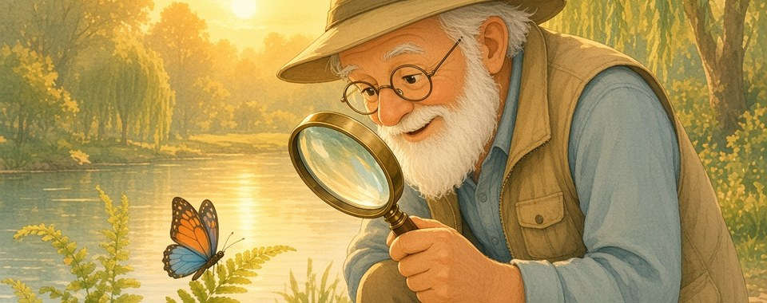
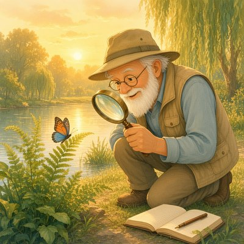

LobsyExpeditieLobsyExpeditie
LobsyExpeditieLobsyExpeditieZo kan een dag eruitzien. Overal is het een beetje anders.


De dag begint met het doornemen van onderzoeksprojecten. Je bekijkt de voortgang en plant de taken voor de dag.
Je voert metingen uit van vingerafdrukken en netvliezen. Deze gegevens zijn belangrijk voor je onderzoek.
Je bespreekt de voortgang met assistenten en statistische medewerkers. Samenwerken is belangrijk voor succes.
Je ontwerpt enquêtes en stelt vragenlijsten op voor nieuwe onderzoeken. Dit helpt bij het verzamelen van gegevens.
Tijd voor een welverdiende pauze. Even ontspannen voordat je verder gaat met de middagactiviteiten.
Je evalueert onderzoeksactiviteiten en interpreteert actuele gegevens. Dit is essentieel voor je wetenschappelijke publicaties.
Je vat de informatie samen en werkt aan verslagen over je onderzoek. De dag eindigt met het bijwerken van je notities.
Overal is het net even anders. Dat is normaal.